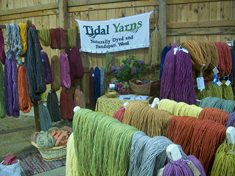
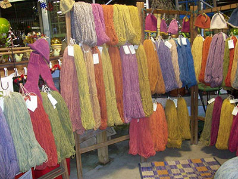

| |
Tidal Yarns Events
Check back for more updates!

Like us on Facebook!
April 26, 2014
Connecticut Sheep & Wool Festival
Tolland Agricultural Center
www.ctsheep.org
May 4, 2014
Mother's Day Craft Fair
Eastern Connecticut Ballet Studios
435 Boston Post Road
East Lyme, CT
May 10 & 11, 2014
New Hampshire Sheep & Wool Festival
Deerfield Fairgrounds
www.nhswga.org
May 17, 2014
8th Annual Wool & Fiber Festival
Coggeshall Farm Museum
www.coggeshallfarm.org
May 24 & 25, 2014
Massachusetts Sheep & Woolcraft Fair
Cummington Fairgrounds
www.masheepwool.org
June 7 & 8, 2014
Maine Fiber Frolic
Windsor Fairgrounds
www.fiberfrolic.com
July 16 - 19, 2014
HGA Convergence
Rhode Island Convention Center
www.weavespindledye.org/convergence
August 24, 2014
Open Air Market & Festival
www.wadsworthmansion.com
September 3 - 7, 2014
Fiber College of Maine
www.fibercollege.org
September 20 & 21, 2014
Finger Lakes Fiber Festival
Hemlock, NY
www.gvhg.org
September 27 & 28, 2014
Southern Adirondack Fiber Festival
Washington County Fairgrounds
www.adkfiber.com
October 4 & 5, 2014
Vermont Sheep & Wool Festival
Tunbridge Fairgrounds
www.vtsheepandwoolfest.org
October 9 - 12, 2014
Stitches East
Hartford Civic Center
www.knittinguniverse.com
November 1 & 2, 2014
Fiber Festival of New England
Eastern States Exposition
www.fiberfestival.org
Past Events
April 20 & 21, 2013
Farm to Fiber
Franklin County Fairgrounds
www.thelittlee.org
May 11 & 12, 2013
New Hampshire Sheep & Wool Festival
Deerfield Fairgrounds
www.nhswga.org
May 18, 2013
7th Annual Wool & Fiber Festival
Coggeshall Farm Museum
www.coggeshallfarm.org
May 25 & 26, 2013
Massachusetts Sheep & Woolcraft Fair
Cummington Fairgrounds
www.masheepwool.org
June 1 & 2, 2013
Maine Fiber Frolic
Windsor Fairgrounds
www.fiberfrolic.com
August 25, 2013
Open Air Market & Festival
www.wadsworthmansion.com
September 21 & 22, 2013
Finger Lakes Fiber Festival
Hemlock, NY
www.gvhg.org
September 28 & 29, 2013
Vermont Sheep & Wool Festival
Tunbridge Fairgrounds
www.vtsheepandwoolfest.org
October 5 & 6, 2013
Southern Adirondack Fiber Festival
Washington County Fairgrounds
www.adkfiber.com
October 12 & 13, 2013
Outdoor Arts Festival
Madison, CT
www.artscenterkillingworth.org
November 2 & 3, 2013
Fiber Festival of New England
Eastern States Exposition
www.fiberfestival.org
November 7-10, 2013
Stitches East
Hartford Civic Center
Hartford, CT
www.KnittingUniverse.com
November 16 & 17, 2013
Green Mountain Fiber Festival
www.whiteriveryarns.com
Tidal Yarns can also be found at:
Mystic River Yarns
Mystic, CT
www.mysticriveryarns.com
Saybrook Yarns
Old Saybrook, CT
www.saybrookyarns.com

|